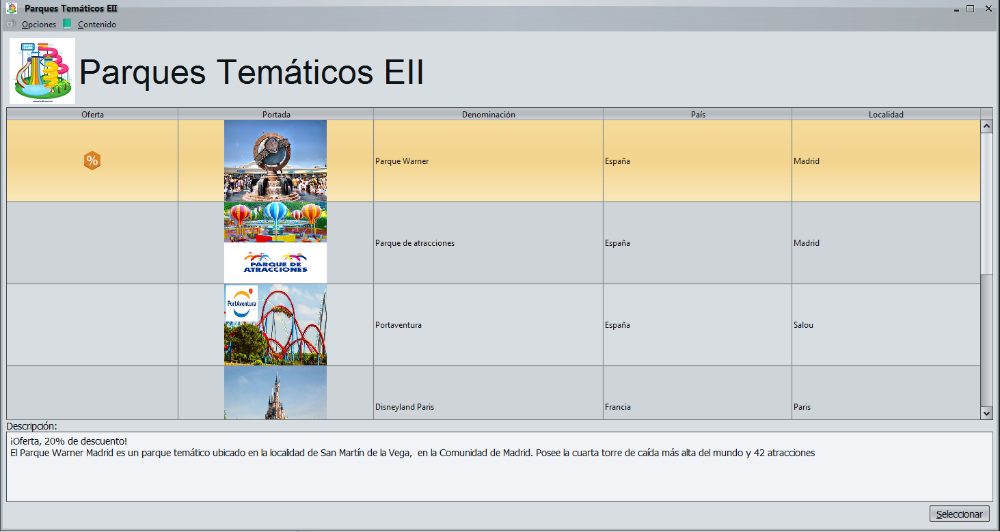

Parques Tematicos EII
Parques Tematicos EII es una aplicación para la consulta de parques tematicos
diponibles, dando la posibilidad de llevar a cabo la reserva en
los mismos de entradas, paquetes o alojamientos.

- Podra filtrar los parques tematicos por el país en el que se encuentran seleccionadolo en la parte superior de la ventana donde trae "Filtro por país".
- Para ver la descripción del parque tematico basta con hacer click sobre el
mismo, cabe destacar que aquellos que estan marcados con el símbolo
quiere decir que están de oferta.
- Finalmente comentar que para ver la relacion de paquetes, alojamientos y entradas
disponibles para el parque tematico seleccionado basta con hacer click en el boton seleccionar.